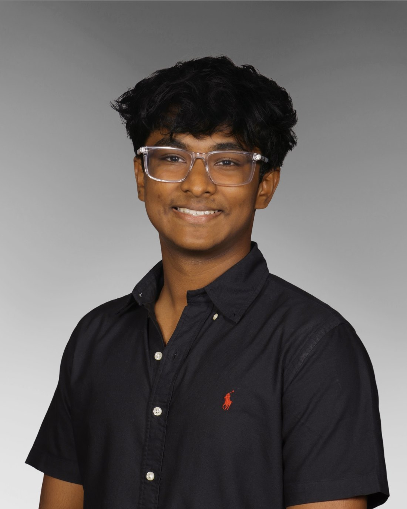
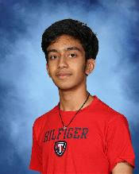

Vision and research direction
Tanush leads GastroCompass as founder, shaping the clinical question, overall product direction, and the standard of credibility the project is built around.
GastroCompass is founder-led by Tanush Nimmalapudi and supported by an early technical team focused on building a more credible, clinically grounded digestive health product.
Tanush leads the project vision, research direction, and overall strategy, while Aarsh supports the technical build and early product development. Together, the team combines research credibility, student leadership, and practical technical execution.
Tanush leads GastroCompass as founder, shaping the clinical question, overall product direction, and the standard of credibility the project is built around.
As a student at FCS Innovation Academy and a researcher at Yale University, Tanush brings research exposure and stronger clinical framing into the project.
Aarsh supports the technical side of GastroCompass with a foundation in programming, problem-solving, and collaborative STEM work focused on building practical systems well.
The team also draws on leadership through ElderTech, CyberPatriot, Mu Alpha Theta, Beta Club, and other STEM activities that strengthen execution, ownership, and collaboration.

Tanush leads the vision, research direction, and overall product strategy behind GastroCompass. As the founder, he is shaping the project around a tighter clinical question and a more credible path toward AI-supported digestive health tools.
As a junior at FCS Innovation Academy STEM High School and a researcher at Yale University, he is building GastroCompass with a strong focus on clinical fit, research credibility, and practical product design. His role is centered on defining the problem, guiding the technical direction, and making sure the project is taken seriously by both patients and professionals.

Aarsh Patel is a junior at FCS Innovation Academy with a focus on IT and an early technical role on GastroCompass. His background supports the project’s product development and technical execution.
He brings leadership experience as Vice President of ElderTech and as a team leader in CyberPatriot, along with involvement in Mu Alpha Theta, Beta Club, and other competitive STEM activities. That background gives him a strong analytical and technical foundation, helping translate the project vision into a more buildable and technically grounded product.
GastroCompass is not meant to be another generic health app. The project is being built around a sharper problem: how to use AI to help surface earlier signs that could matter in digestive disease, especially when patient stories and clinical data live in separate places.
That is why the platform is organized around two sides at once: the patient view for symptom history and the professional view for colonoscopy and endoscopy uploads. The founder vision is to make those two streams work together instead of forcing patients and clinicians to bridge the gap manually.
Building from a STEM-focused academic base with room for independent research and technical product development.
Bringing research exposure into a product direction centered on AI for earlier clinical clarity.
Designing a platform that supports both symptom uploads and professional imaging review.